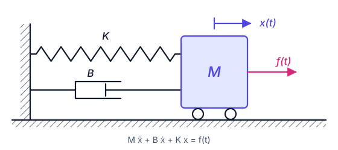

Mechanical systems, like electrical ones, have three passive linear elements. The spring and the mass store energy; the viscous damper dissipates it. Translational motion takes place along a straight or curved path and is described by displacement $x$, velocity $\dot{x}$ and acceleration $\ddot{x}$.
| Element | Force–displacement | Force–velocity | Impedance $F(s)/X(s)$ |
|---|---|---|---|
| Spring, stiffness $K$ (N/m) | $f = K(x_1 - x_2)$ | $f = K\int(v_1 - v_2)\,dt$ | $K$ |
| Damper, coefficient $B$ or $C$ (N·s/m) | $f = B(\dot{x}_1 - \dot{x}_2)$ | $f = B(v_1 - v_2)$ | $Bs$ |
| Mass $M$ (kg) | $f = M\ddot{x}$ | $f = M\dot{v}$ | $Ms^2$ |
Dashpots are added where natural damping is too small: door closers, vehicle suspensions, bridge and flyover bearings.
The method
Newton's second law: the algebraic sum of external forces on a rigid body in a given direction equals its mass times its acceleration in that direction, $\sum F = Ma$. For each mass:
- Draw a free-body diagram: imagine the mass moving in the positive direction and draw every force that opposes or drives it.
- Write $\sum(\text{applied forces}) = \sum(\text{opposing forces})$.
- Take Laplace transforms with zero initial conditions and solve for the ratio you need.
A quick way to write each equation in the s-domain: [sum of impedances connected to this mass] × (its displacement) − [sum of impedances between this mass and each neighbour] × (that neighbour's displacement) = [applied force on this mass]. This is the mechanical twin of nodal analysis.
Example 1: mass and spring
A force $f(t)$ pushes a mass $M$ held by a spring $K$ on a frictionless surface. Forces opposing the motion are $f_M = M\ddot{x}$ and $f_K = Kx$, so
$$f = M\ddot{x} + Kx \;\Rightarrow\; F(s) = (Ms^2 + K)X(s) \;\Rightarrow\; \frac{X(s)}{F(s)} = \frac{1}{Ms^2 + K}$$
With $M = 1000$ kg and $K = 2000$ N/m: $\dfrac{X(s)}{F(s)} = \dfrac{0.001}{s^2 + 2}$. The poles are at $\pm j\sqrt{2}$, so a step force makes the mass oscillate for ever at $\sqrt{2} = 1.41$ rad/s.
Example 2: mass, spring and damper

$$f = M\ddot{x} + B\dot{x} + Kx \;\Rightarrow\; \frac{X(s)}{F(s)} = \frac{1}{Ms^2 + Bs + K}$$
With $M = 1000$, $B = 1000$ and $K = 2000$: $\dfrac{X(s)}{F(s)} = \dfrac{0.001}{s^2 + s + 2}$, so $\omega_n = \sqrt{2} = 1.41$ rad/s and $\zeta = \dfrac{1}{2\sqrt{2}} = 0.354$.
The original slide writes this as $0.001/(s^2 + s + 1000)$. Dividing $1000s^2 + 1000s + 2000$ by 1000 gives $s^2 + s + 2$, so the constant term must be 2.
Example 3: a force applied through a spring
A force acts on the free end $x_1$ of a spring $K$; the other end drives a mass $M$ with friction $B$ (position $x_2$). With no mass at node $x_1$, the spring passes the force straight on:
$$f = K(x_1 - x_2), \qquad 0 = K(x_2 - x_1) + M\ddot{x}_2 + B\dot{x}_2$$
Adding the two equations gives $f = M\ddot{x}_2 + B\dot{x}_2$, so $\dfrac{X_2(s)}{F(s)} = \dfrac{1}{s(Ms + B)}$. The spring only stretches by $f/K$; the mass keeps moving at the constant velocity $f/B$ under a constant force.
Example 4: two masses
One equation per mass:
$$M_1\ddot{y}_1 + B\dot{y}_1 + K_1y_1 + K_2(y_1 - y_2) = f, \qquad M_2\ddot{y}_2 + K_2(y_2 - y_1) = 0$$
In matrix form, with zero initial conditions:
$$\begin{bmatrix} M_1s^2 + Bs + K_1 + K_2 & -K_2 \\ -K_2 & M_2s^2 + K_2 \end{bmatrix}\begin{bmatrix} Y_1 \\ Y_2 \end{bmatrix} = \begin{bmatrix} F \\ 0 \end{bmatrix}$$
By Cramer's rule,
$$\frac{Y_2(s)}{F(s)} = \frac{K_2}{(M_1s^2 + Bs + K_1 + K_2)(M_2s^2 + K_2) - K_2^2}, \qquad \frac{Y_1(s)}{F(s)} = \frac{M_2s^2 + K_2}{\text{same denominator}}$$
The denominator (the determinant) is the characteristic polynomial: fourth order, because two masses store kinetic energy and two springs store potential energy. A more general two-mass arrangement with dampers on both masses is drawn in Control System Engineering, Lesson 4.
Example 5: car suspension
The spring and damper forces depend on the relative motion $x_o - x_i$:
$$m\ddot{x}_o + b(\dot{x}_o - \dot{x}_i) + k(x_o - x_i) = 0 \;\Rightarrow\; m\ddot{x}_o + b\dot{x}_o + kx_o = b\dot{x}_i + kx_i$$
$$\frac{X_o(s)}{X_i(s)} = \frac{bs + k}{ms^2 + bs + k}$$
The DC gain is 1: on a long ramp in the road the body simply follows. The damper adds a zero at $-k/b$, which is why a stiff damper passes sharp bumps through to the body.
Rotational systems and analogies
Rotational systems have the same three elements, with torque $T$ in place of force and angle $\theta$ in place of displacement: torsional spring $T = K(\theta_1 - \theta_2)$, rotational damper $T = B(\dot{\theta}_1 - \dot{\theta}_2)$ and moment of inertia $T = J\ddot{\theta}$. A single inertia on a shaft gives $\dfrac{\Theta(s)}{T(s)} = \dfrac{1}{Js^2 + Bs + K}$.
| Mechanical | Electrical, force–voltage | Electrical, force–current |
|---|---|---|
| Force $f$ (torque $T$) | Voltage $v$ | Current $i$ |
| Velocity $\dot{x}$ ($\dot{\theta}$) | Current $i$ | Voltage $v$ |
| Mass $M$ (inertia $J$) | Inductance $L$ | Capacitance $C$ |
| Damper $B$ | Resistance $R$ | Conductance $1/R$ |
| Spring $K$ | Elastance $1/C$ | Reciprocal inductance $1/L$ |
So $M\ddot{x} + B\dot{x} + Kx = f$ and $L\ddot{q} + R\dot{q} + q/C = v$ are the same equation: the mass-spring-damper and the series RLC circuit are analogous systems.